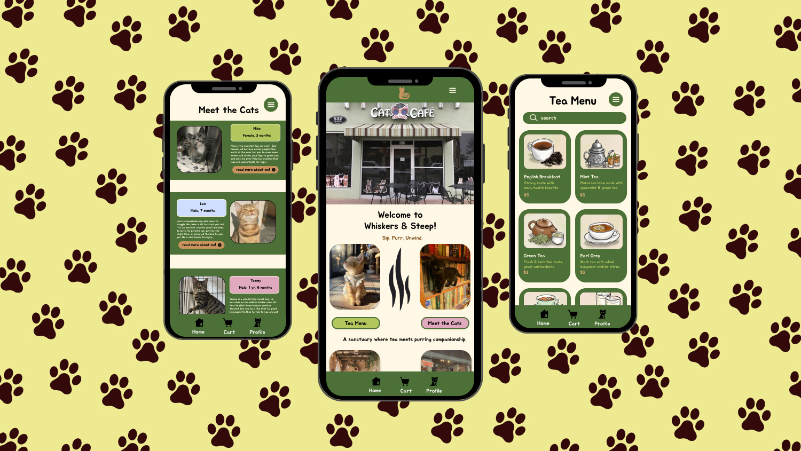

Problem Statement:
Many café and lifestyle apps feel either too cluttered or too generic. Whiskers & Steep aims to balance personality with usability by offering a simple, calming interface that still feels fun and memorable.
Solution:
The app uses clean layouts, soft visuals, and straightforward navigation to create a smooth user experience. Each screen is designed with clarity in mind, allowing users to quickly understand where to go and what actions to take without feeling overwhelmed.

My Role
UX/UI Designer
Research and concept development
Wireframing and low-to-high fidelity design
Team
Independent School Project
Timeline
4 weeks
Tools
Figma
Adobe Illustrator
Key Features
Simple and intuitive navigation
Visually warm and welcoming UI
Interactive prototype

Challenges:
One of the main challenges was finding the right balance between a playful brand personality and a clean, usable interface. I focused on keeping layouts minimal while using color, typography, and spacing to express the brand’s cozy feel.
Outcome:
The final result is a polished app concept that communicates the Whiskers & Steep brand clearly while prioritizing usability. This project strengthened my skills in end-to-end UX/UI design and reinforced the importance of designing with both function and feeling in mind.
Key Takeaways:
-Strong visual identity should always support usability
-Designing solo helped sharpen my decision-making and problem-solving skills